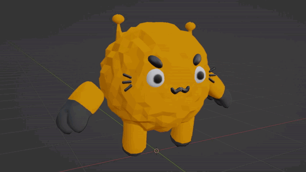

◯
◯
Context
Work and Experience

Originally I only worked as a 3D modeler, animator, and UI artist. However due to teamate issues, I took it upon my self to also work on level design and code adjustments.
This experience would prove to be the hardest of my school projects simply for the amount of mechanics and goals we set for ourselves to create in a 3 month span.
◯
◯
Contributions